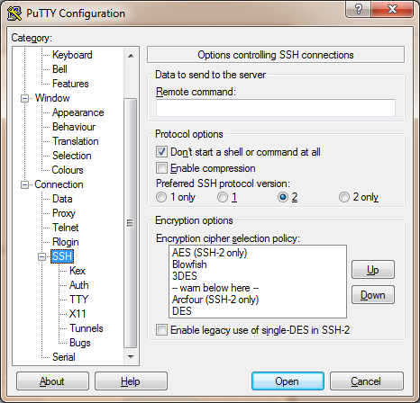
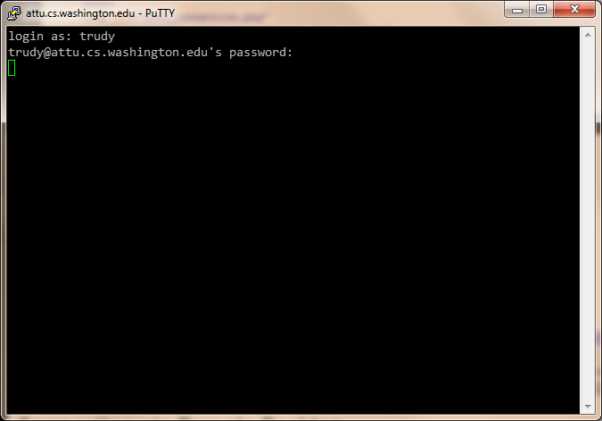

If you are working on CSE 344 projects from home, you might need to connect to our SQL server, IISQLSRV. However, for security reasons, it is not possible to directly connect to IISQLSRV from outside the CSE network.
Despite this restriction, there are two ways you can connect to IISQLSRV. One is to connect to a computer in CSE that has Management Studio and access IISQLSRV from there. Another is to use SSH to create a TCP tunnel, which redirects a TCP connection to a local port on your computer to a remote IP and port, in this case IISQLSRV's port 1433. You can create the tunnel as part of a normal SSH connection to a CSE Linux computer.
You can use Remote Desktop to connect to a Windows machine in the CSE network, and use that computer to connect to IISQLSRV. This is much easier than setting up a TCP tunnel. However, you'll need a fast Internet connection to use Remote Desktop comfortably. In addition, in some projects you will be asked to write Java programs that connect to IISQLSRV with JDBC, and such programs will have to be run on the Windows machine you are connected to, rather than your own.
CSE support maintains two
Remote Desktop
servers, aria.cs and aqua.cs, which both have
Management Studio and thus are ready to connect to IISQLSRV. However, these
computers cannot access IISQLSRV over JDBC. Support also
discourages using aria and aqua for class assignments,
because they are shared by many people and occasionally become overloaded.
Creating a TCP tunnel to IISQLSRV has two advantages over using Remote Desktop: you can write a Java program and have it connect directly to IISQLSRV without having to rely on what's installed on the Remote Desktop machine, and you don't have to worry about the slowness of your Internet connection.
However, setting up a TCP tunnel is a bit harder than using Remote Desktop. You need to do the following:
If you are running Windows, you can use PuTTY, a Windows SSH client. If you have a Mac or Linux machine, you can use the command line SSH command.
Open a shell and run the following command:
ssh -N -L 1433:iisqlsrv.cs.washington.edu:1433 YOUR_CSE_USERNAME@attu.cs.washington.edu
Similar to PuTTY, the ssh program will appear to hang after
you type your password, with no messages (not even an error message).
To close the tunnel, press Ctrl-C to exit ssh.
If you'd like the tunnel to persist until you log out, add an extra -f
option to ssh:
ssh -f -N -L 1433:iisqlsrv.cs.washington.edu:1433 YOUR_CSE_USERNAME@attu.cs.washington.edu
The ssh program will now appear to exit immediately,
but is actually running in the background and will keep running
even after you exit the shell.
Now that you've set up the TCP tunnel, you can connect to IISQLSRV over the tunnel by pointing your client at the local machine (127.0.0.1). To connect using SQL Server Management Studio, you need to install SQL Server locally, since Management Studio comes with SQL Server. You can download an evaluation version from Microsoft, or you can download a perpetually licensed version through CSE's Microsoft software program.
You can then start SQL Server Management Studio locally and choose the following connection settings:
Here, the server name changes from iisqlsrv to
127.0.0.1, but the other settings are the same as if you were
connecting from within the CSE network.
Remember to keep your SSH connection open while you are using Management Studio.
You can also connect to IISQLSRV using JDBC. Again, ensure that you have an SSH connection and set up a tunnel as explained above. You can now connect using a JDBC connection URL like the following:
jdbc:sqlserver://127.0.0.1;database=imdb
where the server name changes from iisqlsrv
to 127.0.0.1, but other parameters stay the same.
You do not need to install Management Studio on your local machine, if you are connecting using JDBC; you only need the JDBC driver for SQL Server.